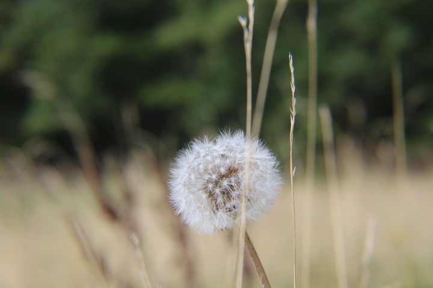

This has been one hell of a year, I’m sure I’m not alone with this sentiment. Sometimes it feels like a horror movie where the plot thickens at every turn. Struggles we had before are that much magnified now that we have to experience it all from home without our usual distractions. Worse than that is how much death we’ve had to endure.
We’ve lost friends and family to Covid-19, we’ve lost our people to police brutality, we’ve lost our celebrities, heroes and more. Death is a natural process yet there is something about it that makes us stop on our tracks. Of all the tragedies we can endure, none is irrevisible but death. It happens when it happens, to whomever it chooses without bargain or warning. Most of us can’t fathom how something so significant is out of our control, so we deny its exists. For practical purposes, denial works, can you imagine what would happen if we all lived like there is no tomorrow? On the flip side denial has the side effect of making us comfortable. There is always tomorrow to get it done, so today and everyday, we can afford comfort; or so we tell ourselves. Death reminds us of the fallacy of that assumption.
We normally say life is short to justify reckless living, we can also say it justify living bigger, louder, larger than life. What does it mean to be bigger? The opposite of comfortable, it means doing things that scare you, being vulnerable, being kind, cherishing life, aware that we only get one chance at today. It means living without regrets, with the confidence that we did our best.
By design living bigger doesn’t come naturally. It is human to sweat the small stuff and miss the big picture. It helps to remember that apart from death, everything else is reversible . Its just September, who knows what’s in store for the rest of the year? I hope you find the strength to be as big as you can be. It doesn’t prolong life but definitely makes for a meaningful one, we owe it yourselves.